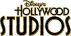

Roteiros dos parques

Disney’s Hollywood Studios

ROTEIRO DO HOLLYWOOD STUDIOS PARA FAMÍLIAS SEM CRIANÇAS
DICA PARA ANTES DE IR AO PARQUE
Antes do dia da visita ao parque, é muito recomendado que você agende os seus Fastpass+ com a
máxima antecedência possível. Este benefício é de graça e te poupa tempo na fila, então não deixe de
fazer uso. No nosso roteiro indicamos as atrações que indicamos usar Fastpass+ com dois símbolos:  (azul, quando o Fastpass+ é recomendado)
(azul, quando o Fastpass+ é recomendado)  (vermelho, quando o Fastpass+ é altamente recomendando ou indispensável). Para usar os seus 3 Fastpass+ que podem ser agendados com antecedência, foque nas atrações que possuem o símbolo vermelho
(vermelho, quando o Fastpass+ é altamente recomendando ou indispensável). Para usar os seus 3 Fastpass+ que podem ser agendados com antecedência, foque nas atrações que possuem o símbolo vermelho
1. CHEGANDO NO PARQUE
Assim como em todos os parques a dica é chegar e pegar um mapa (disponível em português na entrada) e um time guide (guia de horários) dos shows, que no Hollywood Studios são muitos e todos muito bons! Se por acaso você tiver comido bola e não tiver agendado os Fastpass+, vá até um quiosque (ou kiosk, como eles chamam lá) de agendamento antes de qualquer outra coisa.
 TIRAR FOTOS
TIRAR FOTOS
Sempre respeitando os horários agendados para o Fastpass+, comece o seu dia na Hollywood Blvd e aproveite o parque logo que abrir (quando ainda é mais vazio) pois é bem provável que você encontre alguns personagens clássicos por lá para tirar fotos. Depois das fotos, siga para Sunset Blvd onde ficam as atrações mais populares do parque.
 FOOD TIP
FOOD TIP
Se ainda não tiver tomado café da manhã, na entrada da Sunset Boulevard, meio escondinha, fica a
Starring Rolls Cafe, com excelentes opções para matar sua fome.
Se você retornar a Sunset mais tarde para mais uma voltinha nas atrações, vale a pena entrar na Sweet
Spells para comer um docinho. Eu recomendo especialmente o Carrot Cake Cookie, um especie de
biscoitão de bolo de cenoura BEM diferente do bolo de cenoura do Brasil, mas que eu adoro.
Outra boa dica de comidinha na Sunset é dar uma olhada nos sorvetes que são vendidos em uma
daquelas barraquinhas de comida na rua, quase em frente ao teatro da Bela e a Fera.
2. SUNSET BLVD
Ao chegar, verifique o tempo de fila da Rock ' n' Roller Coaster e da Tower of Terror. Se a fila estiver insuportavelmente longa, você terá que voltar mais tarde fazendo uso de Fastpass+, mas se o tempo de espera for menor que 30 minutos, acho que vale a pena encarar a fila. Fique atento também aos horários do show Beauty and the Beast para garantir que você não vai perder, já que são poucas apresentações ao longo do dia.
 IMPERDÍVEIS
IMPERDÍVEIS
– Rock’n Roller Coaster Starring Aerosmith : se a montanha russa já é boa, com a trilha sonoro do Aerosmith fica ainda melhor! Se não ligar muito para ir junto com uma pessoa do seu grupo, você pode entrar na fila de "Single Riders" que basicamente é a fila que eles usam para ir preenchendo grupos com números impares. Por exemplo, se um grupo na fila normal tem 3 pessoas, o funcionário da montanha russa irá "completar" esse grupo no carrinho com uma pessoa da fila "Single Rider". É uma ótima maneira de entrar na montanha russa bem rápido, mas lembrese, você não poderá andar junto com seus amigos e família se entrar nessa fila
: se a montanha russa já é boa, com a trilha sonoro do Aerosmith fica ainda melhor! Se não ligar muito para ir junto com uma pessoa do seu grupo, você pode entrar na fila de "Single Riders" que basicamente é a fila que eles usam para ir preenchendo grupos com números impares. Por exemplo, se um grupo na fila normal tem 3 pessoas, o funcionário da montanha russa irá "completar" esse grupo no carrinho com uma pessoa da fila "Single Rider". É uma ótima maneira de entrar na montanha russa bem rápido, mas lembrese, você não poderá andar junto com seus amigos e família se entrar nessa fila
– The Twilight Zone Tower of Terror : até se você tem medo de montanha russa e não gosta dos brinquedos mais radicais, eu acho que vale dar uma chance para a Tower. É um elevador que despenca mas com um cenário todo especial. Além disso, cada vez que você for na Tower, a queda pode ser diferente.
: até se você tem medo de montanha russa e não gosta dos brinquedos mais radicais, eu acho que vale dar uma chance para a Tower. É um elevador que despenca mas com um cenário todo especial. Além disso, cada vez que você for na Tower, a queda pode ser diferente.
– Beauty and the Beast live on stage : musical ao vivo que conta uma versão resumida da história da Bela e a Fera. Lindo!
: musical ao vivo que conta uma versão resumida da história da Bela e a Fera. Lindo!
 SE TIVER TEMPO
SE TIVER TEMPO
– Teatrinhos na rua: em diferentes momentos do dia acontecem alguns teatrinhos de rua na Sunset. A Disney sabem muito bem fazer um show e esses teatrinhos são sempre bem divertidos.
3. HOLLYWOOD BLVD + ECHO LAKE
Se trata da região central e o canto esquerdo do parque, de quem olha para a frente do Teatro Chinês
 IMPERDÍVEL
IMPERDÍVEL
– The Great Movie Ride: atração que fica dentro da clássica réplica do Teatro Chinês nesse parque. Talvez você não conheça metade dos filmes, mas o show aqui fica a cargo do guia que te acompanha dirigindo o carrinho. Se ele for bom, o passeio vai ser bem divertido.
- Star Tours : Star Wars é um clássico do cinema e não podia estar fora deste parque. O simulador possui algumas variações e cada vez que você vai, pode ver a atração de forma diferente. Se você é fã dos filmes, não deixe de conhecer. Ele inclusive já inclui novidades do filme mais recente, Star Wars: The Force Awakens.
: Star Wars é um clássico do cinema e não podia estar fora deste parque. O simulador possui algumas variações e cada vez que você vai, pode ver a atração de forma diferente. Se você é fã dos filmes, não deixe de conhecer. Ele inclusive já inclui novidades do filme mais recente, Star Wars: The Force Awakens.
 SE TIVER TEMPO
SE TIVER TEMPO
– Indiana Jones Epic Stunt Spectacular!: ninguém dá nada para o show do Indiana Jones mas ele é sempre uma agradável surpresa para quem vai pela primeira vez. Apesar de antigo, é muito bem feito e divertido.
– For the First Time in Forever: A Frozen SingAlong Celebration:essa atração é uma reprodução do filme Frozen que foi lançada como algo temporário, mas acabou se tornando uma atração fixa . Nela, um casal de atores conta a história do filme intercalando com cenas que aparecem no telão. Não é a atração mais bem feita do mundo e se você for esperando ver os personagens do filme O TEMPO TODO, pode se decepcionar (eles aparecem só no começo e no fim). Apesar disso, para quem é fã do filme, vale a pena conhecer.
– For the First Time in Forever: A Frozen SingAlong Celebration: essa atração é uma reprodução do
filme Frozen que foi lançada como algo temporário, mas acabou se tornando uma atração fixa . Nela, um
casal de atores conta a história do filme intercalando com cenas que aparecem no telão. No final há uma
rápida aparição dos personagens Anna, Elsa e Kristoff. Sinceramente, acho a atração meio amadora e
ficou claro que a Disney a criou somente para aproveitar a onda de Frozen sem pensar ou planejar muito
bem. Mas para quem gosta do filme, vale a pena ir..
– Passeio pelas lojinhas: a Disney tem lojinhas legais em todos os cantos, mas essa região possui várias diferentes, que fogem do padrão clássico, então não deixe de visitálas.
– Teatrinhos na rua: assim como a Sunset Blvd, a Hollywood Blvd também possui teatrinhos de rua tão bem feitos e divertidos quanto os da rua vizinha.
 NÃO RECOMENDO
NÃO RECOMENDO
– Jedi Traininge: como essa atração é para crianças, se você escolheu o roteiro de adultos nem poderá participar mesmo. É basicamente um treinamento em que as crianças se formam Jedis. Ainda que não possa participar, você pode assistir se quiser.
 FOOD TIP
FOOD TIP
O maravilhoso Funnel Cake com calda de morango que é vendido no Magic Kingdom, também é vendido numa barraquinha próximo ao Indiana Jones. Detalhe: aqui no Studios, você tem a opção de comer o seu Funnel Cake com adição de sorvete de baunilha! Uma delícia!! Compre o seu Funnel Cake e se quiser evitar a bagunça na hora de comêlo, você ir até o Backlot Express que fica ali pertinho e comer sentado.
4. ANIMATION COURTYARD / PIXAR PLACE / MICKEY’S AVENUE
 IMPERDÍVEIS
IMPERDÍVEIS
– Voyage of the Little Mermaid : mais uma atração teatral com um musical ao vivo que conta a história da Pequena Sereia. Muito bonito!
: mais uma atração teatral com um musical ao vivo que conta a história da Pequena Sereia. Muito bonito!
– Toy Story Mania :: é sim a maior fila do parque e uma das maiores da Disney, mas vale a pena. É uma espécie de competição de tiro ao alvo em 3D muito divertida. Da fila linda ao brinquedo em si, tudo é imperdível!
:: é sim a maior fila do parque e uma das maiores da Disney, mas vale a pena. É uma espécie de competição de tiro ao alvo em 3D muito divertida. Da fila linda ao brinquedo em si, tudo é imperdível!
– Launch Bay: na verdade, imperdível apenas para os fãs de Star Wars. Aqui você encontra vários pontos de foto, personagens, produtos do filme e até um curta falando do novo Star Wars: The Force Awakens
 SE TIVER TEMPO
SE TIVER TEMPO
– Walt Disney: One Man's Dream: se você gosta de Disney, pode se interessar em conhecer um pouquinho mais sobre a história do Walt Disney desde sua infância nesse mini museu dedicado a ele. Eu adoro!
 NÃO RECOMENDO
NÃO RECOMENDO
– Disney Junior live on stage: essa atração é 100% voltada para crianças pequenas, então se você escolheu o roteiro para adultos, acredito que não vai querer visitála.
5. MUPPETS COURTYARD
 SE TIVER TEMPO
SE TIVER TEMPO
– Muppets Vision 3D: é um filme 3D antigo pra caramba e deveria ser atualizado (ainda mais após os novos filmes dos Muppets) mas mesmo velhinho, é um clássico do parque. Além disso, os Muppets são sempre os Muppets e são engraçadinhos. Eu amo o Fozzie. waka waka waka
6. SUNSET BLVD Final do dia
 IMPERDÍVEIS
IMPERDÍVEIS
-Fantasmic! : Como o parque é pequeno, nos dias menos cheios, as pessoas que conseguem gabaritar as atrações antes do final da tarde e muitas vezes optam por ir embora antes do parque fechar. Meu conselho, de coração é: não vá embora sem assistir o Fantasmic, o "show de fogos" do Studios que conta com a performance de vários personagens. Ele é bem diferente de tudo que a gente tá acostumado a ver e é simplesmente lindo e emocionante. Aliás, programese para ir para o Hollywood Studios num dia em que terá apresentação do Fantasmic, pois em algumas épocas do ano, o show não acontece todos os dias da semana.
: Como o parque é pequeno, nos dias menos cheios, as pessoas que conseguem gabaritar as atrações antes do final da tarde e muitas vezes optam por ir embora antes do parque fechar. Meu conselho, de coração é: não vá embora sem assistir o Fantasmic, o "show de fogos" do Studios que conta com a performance de vários personagens. Ele é bem diferente de tudo que a gente tá acostumado a ver e é simplesmente lindo e emocionante. Aliás, programese para ir para o Hollywood Studios num dia em que terá apresentação do Fantasmic, pois em algumas épocas do ano, o show não acontece todos os dias da semana.
6. HOLLYWOOD BLVD – Final do dia
 IMPERDÍVEIS
IMPERDÍVEIS
-Symphony in the Stars: A Galactic Spectacular: tá vendo como o Hollywood Studios é legal? Ele ainda tem DOIS shows de encerramento e os dois são incríveis. Fique de olho nos horários para garantir que não vai perder nenhum, pois valem muito a pena. Como o nome indica, o Symphony in the Stars é um show de fogos inteiramente tematizado de Star Wars mas mesmo quem não conhece a saga se impressiona com os fogos aqui. Em termos de fogos, é meu show preferido da Disney atualmente.